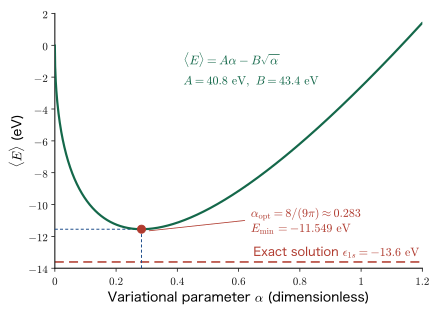
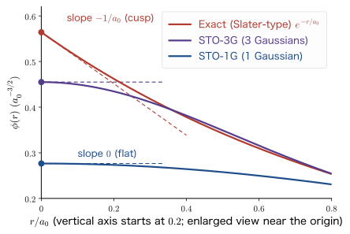
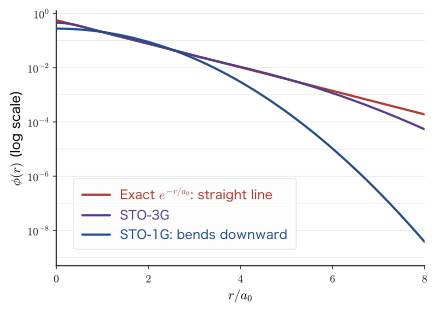
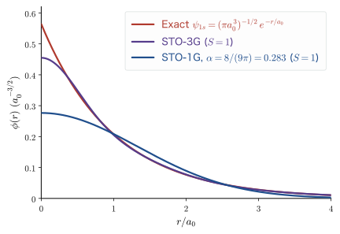
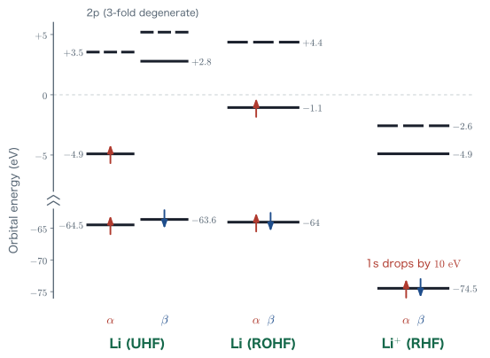

Chapter 6Comparing Gaussian-Basis Approximations with the Exact Solution
In Chapter 3 we studied the variational principle, and in Chapter 5 we studied basis functions (Slater-type orbitals, Gaussian-type orbitals, and STO-3G). Our tools are now ready. In this chapter we use them to find the ground-state energy of the hydrogen atom by hand, from just a single Gaussian function, pretending that we do not know the exact solution. The hydrogen atom is one of the few systems whose exact solution is known, which makes it a perfect practice problem for checking “how well the approximation actually does.” The result is $E_{\min}=\dfrac{8}{3\pi}\epsilon_{1s}=-11.55\ \mathrm{eV}$, which lies as much as 15% above the exact value of $-13.606\ \mathrm{eV}$. Where does this 15% come from? We check the two defects responsible, the cusp at the origin and the decay at large distance, with figures. Then, following the policy that “tedious routine work whose steps are perfectly clear should be left to the machine,” we hand STO-3G over to PySCF and see the error shrink to 6.69%. Finally, we use actual calculations on the Li atom and the Li$^+$ ion to see what differentiates RHF, UHF, and ROHF, a choice the computer makes silently for us.
- How to use the radial Laplacian $\nabla^2=\dfrac{1}{r^2}\dfrac{\dd}{\dd r}\!\left(r^2\dfrac{\dd}{\dd r}\right)$ for a spherically symmetric trial function, and the derivation of $\nabla^2\phi_T=(-6a+4a^2r^2)\phi_T$
- How to build the Gaussian integral formula $\displaystyle\int_0^\infty x^{2n}e^{-cx^2}\dd x$ by differentiation, and the complete hand calculation of the kinetic energy, the Coulomb term, and the normalization integral
- Obtaining $\alpha_{\mathrm{opt}}=\dfrac{8}{9\pi}=0.2829$ and $E_{\min}=\dfrac{8}{3\pi}\epsilon_{1s}=-11.55\ \mathrm{eV}$ by minimizing $E(\alpha)=A\alpha-B\sqrt{\alpha}$
- The derivation of the nuclear cusp condition $\left.\dfrac{1}{\psi}\dfrac{\dd\psi}{\dd r}\right|_{r\to0}=-\dfrac{Z}{a_0}$, and the structural defect that a Gaussian function is necessarily flat at the origin
- The difference between the decay $e^{-\alpha r^2}$ and $e^{-r/a_0}$ at large distance, and why the variationally optimal $\alpha$ differs from the $\alpha$ that maximizes the overlap
- Running an STO-3G calculation with PySCF and reading its output, and a quantitative comparison of STO-1G, STO-3G, 6-31G, and the exact solution
- Closed shells and open shells, $\bm{\alpha}$ spin and $\bm{\beta}$ spin, and the differences among RHF, UHF, and ROHF and when to use each
- Example calculations for the Li atom and the Li$^+$ ion, why the levels fall when the charge is changed, and the seed of Koopmans' theorem
6.1 Solving the Hydrogen Atom as If We Did Not Know the Exact Solution
6.1.1 Why re-solve a problem whose answer we already know?
In Chapter 2 we learned that the Schrödinger equation for the hydrogen atom can be solved exactly, and that its energy levels are
$$ \begin{equation} E_n=\frac{\epsilon_{1s}}{n^2},\qquad \epsilon_{1s}=-\frac{m\ee^4}{8\eps^2h^2}=-13.606\ \mathrm{eV} \label{eq:6-exact-level} \end{equation} $$The wave function of the ground state ($n=1$) also has the simple form
$$ \begin{equation} \psi_{1s}(r)=\frac{1}{\sqrt{\pi a_0^3}}\,e^{-r/a_0},\qquad a_0=\frac{\eps h^2}{\pi m\ee^2}=0.529\times10^{-10}\ \mathrm{m} \label{eq:6-exact-1s} \end{equation} $$Why, then, should we go out of our way to re-solve a problem whose answer is known, using an approximation?
Why? We need a practice problem whose answer we can check
The systems we actually want to calculate—the helium atom, the methane molecule, the SrTiO$_3$ crystal—are all impossible to solve exactly. Because they cannot be solved, we approximate. An approximate calculation, however, has no built-in mechanism that tells us how correct its answer really is. All that the variational principle (Chapter 3) guarantees is the inequality that the result is “greater than or equal to the true ground-state energy”; it does not tell us how far above it we are.
So we run the same approximation on the hydrogen atom, whose exact solution is known. If we learn firsthand what percentage of error appears and in what form the approximation goes wrong, then even for systems whose answers we do not know we can develop a feel for “this is about the accuracy to expect from this basis set.” This idea, called a benchmark, is a basic practice of computational science.
6.1.2 Problem setup: the Hamiltonian and the trial function
With the nucleus (the proton) fixed at the origin, the Hamiltonian for the single electron of the hydrogen atom is
$$ \begin{equation} \Ham=-\frac{\hbar^2}{2m}\nabla^2-\frac{\ee^2}{4\pi\eps}\frac{1}{r} \label{eq:6-hamiltonian} \end{equation} $$The first term is the kinetic energy of the electron, and the second term is the Coulomb attraction energy between the electron and the nucleus. The stipulation that the nucleus may be held still is called the Born–Oppenheimer approximation, and we will justify it properly in Chapter 8.
As the trial function we use just a single Gaussian-type orbital (GTO), which was introduced in Chapter 5.
Definition: The trial function used in this chapter (a single Gaussian function)
$$ \begin{equation} \phi_T(r)=N\exp\!\left[-\alpha\left(\frac{r}{a_0}\right)^{\!2}\right] =N e^{-ar^2}, \qquad a\equiv\frac{\alpha}{a_0^2} \label{eq:6-trial} \end{equation} $$Here $\alpha$ is a dimensionless variational parameter, $a=\alpha/a_0^2$ is a quantity with dimensions of length$^{-2}$, and $N$ is the normalization constant. Note that $\phi_T$ does not depend on $\theta,\varphi$; that is, it is spherically symmetric. Since we are aiming at the 1s orbital, this is just what we want.
What we have to do is exactly the variational principle (Chapter 3). We find the expectation value of the energy
$$ \begin{equation} \braket{E}(\alpha)=\frac{\bra{\phi_T}\Ham\ket{\phi_T}}{\braket{\phi_T|\phi_T}} \label{eq:6-energy-def} \end{equation} $$as a function of $\alpha$, and look for the $\alpha$ that minimizes it. By the variational principle, $\braket{E}(\alpha)\ge \epsilon_{1s}$ for any choice of $\alpha$, so the smaller we make $\braket{E}$, the closer we come to the true ground state.
Why? Do not forget to divide by the denominator
The denominator $\braket{\phi_T|\phi_T}$ in Eq. \eqref{eq:6-energy-def} is “insurance that lets us use a trial function that has not been normalized.” If we normalized $\phi_T$ in advance the denominator would be 1, but then we would have to determine $N$ first as a function of $\alpha$, and when differentiating with respect to $\alpha$ we would be saddled with differentiating $N(\alpha)$ as well. If we keep the denominator, then in the end $N^2$ cancels neatly between numerator and denominator. The practical benefit of keeping the ratio form is that we never have to determine the normalization constant.
6.1.3 Doing the angular integration first
We write the bracket back as an integral. In polar coordinates the three-dimensional volume element is $\dd^3r=r^2\sin\theta\,\dd r\,\dd\theta\,\dd\varphi$ (Appendix A). The numerator is
$$ \begin{align} \bra{\phi_T}\Ham\ket{\phi_T} &=\int_0^{2\pi}\!\!\int_0^{\pi}\!\!\int_0^{\infty}\phi_T(r)\,\Ham\,\phi_T(r)\,r^2\sin\theta\,\dd r\,\dd\theta\,\dd\varphi \nonumber\\ &=\int_0^{2\pi}\dd\varphi\int_0^{\pi}\sin\theta\,\dd\theta\int_0^{\infty}\phi_T(r)\,\Ham\,\phi_T(r)\,r^2\,\dd r \nonumber\\ &=2\pi\cdot 2\cdot\int_0^{\infty}\phi_T(r)\,\Ham\,\phi_T(r)\,r^2\,\dd r =4\pi\int_0^{\infty}\phi_T(r)\,\Ham\,\phi_T(r)\,r^2\,\dd r \label{eq:6-angular} \end{align} $$Since $\phi_T$ is a real function, we need not write the complex conjugate. We used $\int_0^{2\pi}\dd\varphi=2\pi$ and $\int_0^{\pi}\sin\theta\,\dd\theta=[-\cos\theta]_0^{\pi}=1-(-1)=2$. From here on, this $4\pi$ appears in both the numerator and the denominator, so it will in fact cancel at the end. We will write it out dutifully all the same.
Substituting the Hamiltonian \eqref{eq:6-hamiltonian}, what we need to calculate is
$$ 4\pi N^2\int_0^{\infty}e^{-ar^2} \underbrace{\left(-\frac{\hbar^2}{2m}\nabla^2\right)}_{\text{Term 1: kinetic energy}} \!\!\!e^{-ar^2}\,r^2\dd r \;+\; 4\pi N^2\int_0^{\infty}e^{-ar^2} \underbrace{\left(-\frac{\ee^2}{4\pi\eps}\frac{1}{r}\right)}_{\text{Term 2: Coulomb attraction}} \!\!\!e^{-ar^2}\,r^2\dd r $$These two integrals, together with the normalization integral in the denominator, make three in all. It is tedious from here on, but if we proceed carefully one step at a time, we will surely finish. Let us dispose of them in order.
Example 6.1: Normalization constant $N$
Find the constant $N$ that normalizes the trial function \eqref{eq:6-trial}. You may use $\displaystyle\int_0^\infty r^2e^{-cr^2}\dd r=\frac{1}{4}\sqrt{\frac{\pi}{c^3}}$.
Solution. The normalization condition is $\displaystyle\int\abs{\phi_T}^2\dd^3r=1$. Doing the angular integration first, we obtain
$$ 1=4\pi N^2\int_0^\infty e^{-2ar^2}r^2\,\dd r =4\pi N^2\cdot\frac{1}{4}\sqrt{\frac{\pi}{(2a)^3}} =\pi N^2\frac{\sqrt{\pi}}{(2a)^{3/2}} . $$Therefore $N^2=(2a)^{3/2}/\pi^{3/2}=(2a/\pi)^{3/2}$, that is,
$$ N=\left(\frac{2a}{\pi}\right)^{3/4} =\left(\frac{2\alpha}{\pi a_0^2}\right)^{3/4}. $$This is the same as the normalization constant of a Gaussian-type orbital that we found in Chapter 5. In the main calculation of this chapter, however, as stated in Section 6.1.2, we push on without determining $N$, keeping the ratio form. We need $N$ only at the very end, when we plot the shape of the wave function.
6.2 The Radial Part of the Laplacian and the Kinetic Energy Term
6.2.1 The Laplacian acting on a spherically symmetric function
In Cartesian coordinates the Laplacian is $\nabla^2=\dfrac{\partial^2}{\partial x^2}+\dfrac{\partial^2}{\partial y^2}+\dfrac{\partial^2}{\partial z^2}$. Transforming to polar coordinates (Appendix A), we obtain
$$ \nabla^2=\frac{1}{r^2}\frac{\partial}{\partial r}\left(r^2\frac{\partial}{\partial r}\right) +\frac{1}{r^2\sin\theta}\frac{\partial}{\partial\theta}\left(\sin\theta\frac{\partial}{\partial\theta}\right) +\frac{1}{r^2\sin^2\theta}\frac{\partial^2}{\partial\varphi^2} $$but since $\phi_T$ does not depend on $\theta,\varphi$, the last two terms vanish. Only the radial part remains.
Math Note: Two ways to write the radial Laplacian
For a spherically symmetric function $f(r)$,
$$ \begin{equation} \nabla^2 f=\frac{1}{r^2}\frac{\dd}{\dd r}\left(r^2\frac{\dd f}{\dd r}\right) =\frac{\dd^2f}{\dd r^2}+\frac{2}{r}\frac{\dd f}{\dd r} \label{eq:6-laplacian-radial} \end{equation} $$holds. To check the equality, we only need to apply the product rule:
$$ \frac{1}{r^2}\frac{\dd}{\dd r}\left(r^2\frac{\dd f}{\dd r}\right) =\frac{1}{r^2}\left(2r\frac{\dd f}{\dd r}+r^2\frac{\dd^2 f}{\dd r^2}\right) =\frac{2}{r}\frac{\dd f}{\dd r}+\frac{\dd^2 f}{\dd r^2}. $$The form on the right-hand side ($\dd^2/\dd r^2+ (2/r)\dd/\dd r$) is easier to use when acting on a concrete function. We use this form from now on.
6.2.2 Finding $\nabla^2\phi_T$
We apply Eq. \eqref{eq:6-laplacian-radial} to $\phi_T=Ne^{-ar^2}$. First, by the chain rule, the first derivative is
$$ \frac{\dd\phi_T}{\dd r}=N\cdot e^{-ar^2}\cdot(-2ar)=-2ar\,N e^{-ar^2} $$Next, the second derivative is the derivative of the product of $-2ar$ and $e^{-ar^2}$, so
$$ \frac{\dd^2\phi_T}{\dd r^2} =N\left[(-2a)e^{-ar^2}+(-2ar)\cdot(-2ar)e^{-ar^2}\right] =\left(-2a+4a^2r^2\right)Ne^{-ar^2}. $$Also,
$$ \frac{2}{r}\frac{\dd\phi_T}{\dd r}=\frac{2}{r}\cdot(-2ar)Ne^{-ar^2}=-4a\,Ne^{-ar^2} $$(since $r$ cancels, this does not diverge even as $r\to0$). Adding the two gives
6.2.3 Preparing the necessary Gaussian integrals
We shall need $\int_0^\infty r^2e^{-2ar^2}\dd r$ and $\int_0^\infty r^4e^{-2ar^2}\dd r$. Starting from the basic form used in Chapter 5,
$$ I_0(c)\equiv\int_0^\infty e^{-cx^2}\dd x=\frac{1}{2}\sqrt{\frac{\pi}{c}} $$we can generate all of them with a single move: differentiating with respect to the parameter $c$.
Math Note: Generating Gaussian integrals by differentiation
Differentiate both sides of $I_0(c)=\dfrac{1}{2}\sqrt{\pi}\,c^{-1/2}$ with respect to $c$. On the left-hand side we may differentiate under the integral sign (the integrand decays sufficiently fast for $c\gt0$), so
$$ \frac{\dd I_0}{\dd c}=\int_0^\infty\frac{\partial}{\partial c}e^{-cx^2}\dd x =-\int_0^\infty x^2e^{-cx^2}\dd x, \qquad \frac{\dd}{\dd c}\left(\frac{\sqrt{\pi}}{2}c^{-1/2}\right)=-\frac{\sqrt{\pi}}{4}c^{-3/2} $$and therefore
$$ \begin{equation} \int_0^\infty x^2e^{-cx^2}\dd x=\frac{\sqrt{\pi}}{4}c^{-3/2}=\frac{1}{4}\sqrt{\frac{\pi}{c^3}} . \label{eq:6-gauss-2} \end{equation} $$Differentiating once more, we obtain
$$ \begin{equation} \int_0^\infty x^4e^{-cx^2}\dd x=\frac{3\sqrt{\pi}}{8}c^{-5/2}=\frac{3}{8}\sqrt{\frac{\pi}{c^5}} . \label{eq:6-gauss-4} \end{equation} $$In general, $\displaystyle\int_0^\infty x^{2n}e^{-cx^2}\dd x=\frac{(2n-1)!!}{2(2c)^{n}}\sqrt{\frac{\pi}{c}}$ (where $(2n-1)!!=1\cdot3\cdot5\cdots(2n-1)$ and $(-1)!!=1$).
The odd powers, in contrast, are obtained by elementary means from the substitution $t=x^2$. Since $\dd t=2x\,\dd x$,
$$ \begin{equation} \int_0^\infty x^{2m+1}e^{-cx^2}\dd x=\frac{1}{2}\int_0^\infty t^{m}e^{-ct}\dd t=\frac{m!}{2c^{m+1}} . \label{eq:6-gauss-odd} \end{equation} $$In particular, for $m=0$ we have $\displaystyle\int_0^\infty xe^{-cx^2}\dd x=\frac{1}{2c}$. The remark “try it yourself” written in the lecture slides refers to this Eq. \eqref{eq:6-gauss-odd}.
What we use in this chapter is the case $c=2a$. Let us write the results out.
$$ \begin{align} \int_0^\infty r^2e^{-2ar^2}\dd r&=\frac{1}{4}\sqrt{\frac{\pi}{(2a)^3}}=\frac{\sqrt{\pi}}{8\sqrt{2}\,a^{3/2}}, \label{eq:6-int-r2}\\[4pt] \int_0^\infty r^4e^{-2ar^2}\dd r&=\frac{3}{8}\sqrt{\frac{\pi}{(2a)^5}}=\frac{3\sqrt{\pi}}{32\sqrt{2}\,a^{5/2}}, \label{eq:6-int-r4}\\[4pt] \int_0^\infty r\,e^{-2ar^2}\dd r&=\frac{1}{4a}. \label{eq:6-int-r1} \end{align} $$Here we used $(2a)^{3/2}=2\sqrt{2}\,a^{3/2}$ and $(2a)^{5/2}=4\sqrt{2}\,a^{5/2}$. We have $4\cdot2\sqrt2=8\sqrt2$ and $8\cdot4\sqrt2=32\sqrt2$.
6.2.4 Expectation value of the kinetic energy (before normalization)
At last we compute the first term. Substituting Eq. \eqref{eq:6-lap-phi}, we get
$$ \begin{align} \bra{\phi_T}\frac{\hat{p}^2}{2m}\ket{\phi_T} &=4\pi N^2\int_0^\infty e^{-ar^2}\left(-\frac{\hbar^2}{2m}\nabla^2\right)e^{-ar^2}\,r^2\dd r \nonumber\\ &=4\pi N^2\int_0^\infty e^{-ar^2}\left(-\frac{\hbar^2}{2m}\right)\left(-6a+4a^2r^2\right)e^{-ar^2}\,r^2\dd r \nonumber\\ &=4\pi N^2\left(-\frac{\hbar^2}{2m}\right)\int_0^\infty\left(-6a+4a^2r^2\right)e^{-2ar^2}\,r^2\dd r \nonumber\\ &=\frac{4\pi\hbar^2N^2}{m}\int_0^\infty\left(3a-2a^2r^2\right)e^{-2ar^2}\,r^2\dd r . \label{eq:6-kin-1} \end{align} $$In the last line we simplified $-\dfrac{\hbar^2}{2m}\times(-6a+4a^2r^2)=\dfrac{\hbar^2}{m}(3a-2a^2r^2)$ (the sign is reversed twice, so take particular care here).
We replace the integrals using Eqs. \eqref{eq:6-int-r2} and \eqref{eq:6-int-r4}.
$$ \begin{align} \int_0^\infty\left(3a-2a^2r^2\right)e^{-2ar^2}r^2\dd r &=3a\int_0^\infty r^2e^{-2ar^2}\dd r-2a^2\int_0^\infty r^4e^{-2ar^2}\dd r \nonumber\\ &=3a\cdot\frac{\sqrt{\pi}}{8\sqrt2\,a^{3/2}}-2a^2\cdot\frac{3\sqrt{\pi}}{32\sqrt2\,a^{5/2}} \nonumber\\ &=\frac{3\sqrt{\pi}}{8\sqrt2\,a^{1/2}}-\frac{6\sqrt{\pi}}{32\sqrt2\,a^{1/2}} \nonumber\\ &=\frac{\sqrt{\pi}}{\sqrt{a}}\left(\frac{3}{8\sqrt2}-\frac{3}{16\sqrt2}\right) =\frac{\sqrt{\pi}}{\sqrt{a}}\cdot\frac{3}{16\sqrt2} =\frac{3\sqrt2}{32}\sqrt{\frac{\pi}{a}} . \label{eq:6-kin-2} \end{align} $$The expression in parentheses is $\dfrac{3}{8\sqrt2}-\dfrac{3}{16\sqrt2}=\dfrac{6-3}{16\sqrt2}=\dfrac{3}{16\sqrt2}$, and we rationalized the denominator to write $\dfrac{3}{16\sqrt2}=\dfrac{3\sqrt2}{32}$. Therefore
The coefficient is $4\pi\cdot\dfrac{3\sqrt2}{32}=\dfrac{12\sqrt2\,\pi}{32}=\dfrac{3\sqrt2\,\pi}{8}$. The kinetic energy is positive ($a\gt0$), and increasing $a$ (making the wave function narrower) makes $\sqrt{1/a}$ smaller... or so it would seem, but note that this is a quantity that has not been normalized. We shall see the behavior after dividing by the denominator in Section 6.5.
Example 6.2: Checking how to use the integral formulas
Find $\displaystyle\int_0^\infty r^4e^{-2ar^2}\dd r$ by differentiating Eq. \eqref{eq:6-int-r2} with respect to $a$, without using Eq. \eqref{eq:6-gauss-4}.
Solution. Differentiate both sides of Eq. \eqref{eq:6-int-r2} with respect to $a$. The left-hand side becomes
$$ \frac{\dd}{\dd a}\int_0^\infty r^2e^{-2ar^2}\dd r=\int_0^\infty r^2(-2r^2)e^{-2ar^2}\dd r=-2\int_0^\infty r^4e^{-2ar^2}\dd r . $$The right-hand side is $\dfrac{\sqrt\pi}{8\sqrt2}\dfrac{\dd}{\dd a}a^{-3/2}=\dfrac{\sqrt\pi}{8\sqrt2}\left(-\dfrac{3}{2}\right)a^{-5/2}=-\dfrac{3\sqrt\pi}{16\sqrt2}a^{-5/2}$. Therefore
$$ \int_0^\infty r^4e^{-2ar^2}\dd r=\frac{1}{2}\cdot\frac{3\sqrt\pi}{16\sqrt2}a^{-5/2}=\frac{3\sqrt{\pi}}{32\sqrt2\,a^{5/2}} , $$which agrees with Eq. \eqref{eq:6-int-r4}. If you remember a single Gaussian integral, you can generate endlessly many others by differentiation—this is part of the reason why Gaussian-type basis functions are so powerful in calculations.
6.3 The Coulomb Attraction Term
The second term is the Coulomb attraction to the nucleus. We start from the form in which the angular integration has already been carried out.
$$ \begin{align} \bra{\phi_T}\left(-\frac{\ee^2}{4\pi\eps}\frac{1}{r}\right)\ket{\phi_T} &=4\pi N^2\int_0^\infty e^{-ar^2}\left(-\frac{\ee^2}{4\pi\eps}\frac{1}{r}\right)e^{-ar^2}\,r^2\dd r \nonumber\\ &=4\pi N^2\left(-\frac{\ee^2}{4\pi\eps}\right)\int_0^\infty e^{-2ar^2}\,\frac{r^2}{r}\,\dd r \nonumber\\ &=-\frac{N^2\ee^2}{\eps}\int_0^\infty r\,e^{-2ar^2}\dd r . \label{eq:6-coul-1} \end{align} $$Note here that $4\pi\times\dfrac{1}{4\pi\eps}=\dfrac{1}{\eps}$, so that the $4\pi$ cancels neatly. The seemingly cumbersome coefficient $1/(4\pi\eps)$ of SI units is there precisely so that it cancels the $4\pi$ of a spherically symmetric integral.
The remaining integral is Eq. \eqref{eq:6-int-r1} itself, or, directly,
$$ \int_0^\infty r\,e^{-2ar^2}\dd r =\left[-\frac{1}{4a}e^{-2ar^2}\right]_0^\infty =0-\left(-\frac{1}{4a}\right)=\frac{1}{4a} $$(if we use $\dfrac{\dd}{\dd r}e^{-2ar^2}=-4ar\,e^{-2ar^2}$, it is clear at a glance that the antiderivative is $-\dfrac{1}{4a}e^{-2ar^2}$). Therefore
6.4 The Normalization Integral (Denominator)
Finally, we compute the denominator of Eq. \eqref{eq:6-energy-def}. The angular integration is exactly the same as for the numerator and yields $4\pi$.
$$ \begin{align} \braket{\phi_T|\phi_T} &=\int_0^{2\pi}\!\!\int_0^\pi\!\!\int_0^\infty \phi_T(r)\phi_T(r)\,r^2\sin\theta\,\dd r\,\dd\theta\,\dd\varphi =4\pi\int_0^\infty N^2e^{-2ar^2}r^2\,\dd r \nonumber\\ &=4\pi N^2\cdot\frac{\sqrt\pi}{8\sqrt2\,a^{3/2}} =\frac{\pi^{3/2}N^2}{2\sqrt2\,a^{3/2}} =\frac{\sqrt2}{4}\left(\frac{\pi}{a}\right)^{3/2}N^2 . \label{eq:6-norm-result} \end{align} $$Here we used $\dfrac{4\pi}{8\sqrt2}=\dfrac{\pi}{2\sqrt2}$ and then rationalized $\dfrac{1}{2\sqrt2}=\dfrac{\sqrt2}{4}$. We also have $\pi\cdot\sqrt\pi=\pi^{3/2}$.
6.5 Minimizing $E(\alpha)=A\alpha-B\sqrt{\alpha}$
6.5.1 Assembling the expectation value
Substitute Eqs. \eqref{eq:6-kin-result}, \eqref{eq:6-coul-result}, and \eqref{eq:6-norm-result} into Eq. \eqref{eq:6-energy-def}.
$$ \braket{E}= \dfrac{\dfrac{3\sqrt2\,\pi\hbar^2}{8m}\sqrt{\dfrac{\pi}{a}}\,N^2-\dfrac{\ee^2}{4\eps a}N^2} {\dfrac{\sqrt2}{4}\left(\dfrac{\pi}{a}\right)^{3/2}N^2} $$First, $N^2$ cancels between the numerator and the denominator. As announced, we did not need to determine the normalization constant. Next we treat the two terms separately.
Kinetic energy term:
$$ \begin{align} \frac{\dfrac{3\sqrt2\,\pi\hbar^2}{8m}\left(\dfrac{\pi}{a}\right)^{1/2}}{\dfrac{\sqrt2}{4}\left(\dfrac{\pi}{a}\right)^{3/2}} &=\frac{3\sqrt2\,\pi\hbar^2}{8m}\cdot\frac{4}{\sqrt2}\cdot\left(\frac{\pi}{a}\right)^{1/2-3/2} \nonumber\\ &=\frac{3\pi\hbar^2}{2m}\cdot\left(\frac{\pi}{a}\right)^{-1} =\frac{3\pi\hbar^2}{2m}\cdot\frac{a}{\pi} =\frac{3\hbar^2}{2m}\,a . \label{eq:6-T-final} \end{align} $$Coulomb term:
$$ \begin{align} \frac{-\dfrac{\ee^2}{4\eps a}}{\dfrac{\sqrt2}{4}\left(\dfrac{\pi}{a}\right)^{3/2}} &=-\frac{\ee^2}{4\eps a}\cdot\frac{4}{\sqrt2}\cdot\left(\frac{a}{\pi}\right)^{3/2} =-\frac{\ee^2}{\sqrt2\,\eps}\cdot\frac{a^{3/2}}{a\,\pi^{3/2}} =-\frac{\ee^2}{\sqrt2\,\pi^{3/2}\eps}\sqrt{a} . \label{eq:6-V-final} \end{align} $$Putting these together, the expression in terms of the dimensional $a$ is
$$ \begin{equation} \braket{E}(a)=\frac{3\hbar^2}{2m}\,a-\frac{\ee^2}{\sqrt2\,\pi^{3/2}\eps}\sqrt{a} \label{eq:6-energy-a} \end{equation} $$Substituting $a=\alpha/a_0^2$ here, we obtain, as a function of the dimensionless parameter $\alpha$,
Note that $\sqrt{a}=\sqrt{\alpha}/a_0$ (so $a_0$ enters the denominator of $B$ to the first power).
6.5.2 Expressing $A$ and $B$ in terms of $\epsilon_{1s}$
$A$ and $B$ contain a great many physical constants, which makes them hard to read. A little extra work makes them surprisingly neat. What we use are the definitions of the Bohr radius and of the 1s level (Chapter 2).
$$ a_0=\frac{4\pi\eps\hbar^2}{m\ee^2}, \qquad \epsilon_{1s}=-\frac{\ee^2}{8\pi\eps a_0} \quad\Longleftrightarrow\quad \abs{\epsilon_{1s}}=\frac{\ee^2}{8\pi\eps a_0}=13.606\ \mathrm{eV} $$Derivation: $A=3\abs{\epsilon_{1s}}$, $B=\dfrac{8}{\sqrt{2\pi}}\abs{\epsilon_{1s}}$
(i) For $A$. Solving the definition of the Bohr radius for $\hbar^2/m$ gives
$$ a_0=\frac{4\pi\eps\hbar^2}{m\ee^2} \quad\Longrightarrow\quad \frac{\hbar^2}{m}=\frac{a_0\ee^2}{4\pi\eps} \quad\Longrightarrow\quad \frac{\hbar^2}{ma_0^2}=\frac{\ee^2}{4\pi\eps a_0}=2\abs{\epsilon_{1s}} . $$The last equality holds because twice $\abs{\epsilon_{1s}}=\ee^2/(8\pi\eps a_0)$ is $\ee^2/(4\pi\eps a_0)$. Therefore
$$ A=\frac{3}{2}\cdot\frac{\hbar^2}{ma_0^2}=\frac{3}{2}\cdot2\abs{\epsilon_{1s}}=3\abs{\epsilon_{1s}} . $$(ii) For $B$. Since $\dfrac{\ee^2}{\eps a_0}=8\pi\abs{\epsilon_{1s}}$,
$$ B=\frac{8\pi\abs{\epsilon_{1s}}}{\sqrt2\,\pi^{3/2}} =\frac{8\abs{\epsilon_{1s}}}{\sqrt2\,\sqrt\pi} =\frac{8}{\sqrt{2\pi}}\abs{\epsilon_{1s}} =4\sqrt{\frac{2}{\pi}}\,\abs{\epsilon_{1s}} . $$(We have $\dfrac{8}{\sqrt2\sqrt\pi}=\dfrac{8}{\sqrt{2\pi}}$, and also $\dfrac{8}{\sqrt{2\pi}}=\dfrac{8}{\sqrt2\sqrt\pi}=\dfrac{8\sqrt2}{2\sqrt\pi}=4\sqrt{\dfrac{2}{\pi}}$.)
Let us put in numbers. With $\abs{\epsilon_{1s}}=13.606\ \mathrm{eV}$,
$$ \begin{equation} A=3\times13.606=40.82\ \mathrm{eV}, \qquad B=\frac{8}{\sqrt{2\pi}}\times13.606=3.1915\times13.606=43.42\ \mathrm{eV}. \label{eq:6-AB-num} \end{equation} $$(Here $\sqrt{2\pi}=2.50663$ and $8/2.50663=3.19154$.) From now on we work with
$$ \begin{equation} \braket{E}(\alpha)=3\abs{\epsilon_{1s}}\,\alpha-\frac{8}{\sqrt{2\pi}}\abs{\epsilon_{1s}}\sqrt{\alpha} \label{eq:6-energy-eps} \end{equation} $$a form that uses $\abs{\epsilon_{1s}}$ as the unit. All the physical constants have been packed into the single quantity $\abs{\epsilon_{1s}}$.
6.5.3 Finding the minimum
Differentiate $\braket{E}(\alpha)=A\alpha-B\sqrt\alpha$ with respect to $\alpha$. Since $\dfrac{\dd}{\dd\alpha}\sqrt\alpha=\dfrac{1}{2\sqrt\alpha}$,
$$ \begin{equation} \frac{\dd\braket{E}}{\dd\alpha}=A-\frac{B}{2}\frac{1}{\sqrt\alpha} . \label{eq:6-dEda} \end{equation} $$The condition for this to vanish is $A=\dfrac{B}{2\sqrt\alpha}$, that is, $\sqrt\alpha=\dfrac{B}{2A}$. Squaring both sides gives
That this point is a minimum follows from the second derivative, $\dfrac{\dd^2\braket{E}}{\dd\alpha^2}=\dfrac{B}{4}\alpha^{-3/2}\gt0$ ($B\gt0$, $\alpha\gt0$). Since $\braket{E}$ rises both as $\alpha\to0$ and as $\alpha\to\infty$, this is the only minimum point.
The minimum value itself is obtained by substituting $\alpha_{\mathrm{opt}}$:
$$ \begin{align} E_{\min}=\braket{E}(\alpha_{\mathrm{opt}}) &=A\cdot\frac{B^2}{4A^2}-B\cdot\sqrt{\frac{B^2}{4A^2}} =\frac{B^2}{4A}-B\cdot\frac{B}{2A} \nonumber\\ &=\frac{B^2}{4A}-\frac{B^2}{2A} =\frac{B^2-2B^2}{4A} =-\frac{B^2}{4A} . \label{eq:6-emin} \end{align} $$6.5.4 Checking by substituting numbers
This is the crux of the chapter. Let us substitute carefully. Since $A=3\abs{\epsilon_{1s}}$ and $B=\dfrac{8}{\sqrt{2\pi}}\abs{\epsilon_{1s}}$, we first have
$$ B^2=\frac{64}{2\pi}\abs{\epsilon_{1s}}^2=\frac{32}{\pi}\abs{\epsilon_{1s}}^2, \qquad 4A^2=4\cdot9\abs{\epsilon_{1s}}^2=36\abs{\epsilon_{1s}}^2 . $$Therefore
The $\abs{\epsilon_{1s}}$ has disappeared completely, leaving a pure number. We have $9\pi=28.2743$ and $8/28.2743=0.282942$. Returning to the dimensional form, $a_{\mathrm{opt}}=\dfrac{8}{9\pi a_0^2}$.
The minimum value of the energy is
The last equality holds because $\epsilon_{1s}=-\abs{\epsilon_{1s}}$ (a negative quantity), so the minus sign has been absorbed into $\epsilon_{1s}$. Numerically,
$$ \begin{equation} \frac{8}{3\pi}=\frac{8}{9.42478}=0.848826, \qquad E_{\min}=0.848826\times(-13.606)=-11.549\ \mathrm{eV}. \label{eq:6-emin-num} \end{equation} $$Theorem: The hydrogen atom solved with a single Gaussian function
The result of the variational calculation with the trial function $\phi_T=N\exp[-\alpha(r/a_0)^2]$ is
$$ \alpha_{\mathrm{opt}}=\frac{8}{9\pi}=0.28294\ \ (\text{dimensionless}), \qquad E_{\min}=\frac{8}{3\pi}\epsilon_{1s}=0.8488\,\epsilon_{1s}=-11.549\ \mathrm{eV}. $$The error relative to the exact solution $\epsilon_{1s}=-13.606\ \mathrm{eV}$ is
$$ \frac{\abs{\epsilon_{1s}}-\abs{E_{\min}}}{\abs{\epsilon_{1s}}}=1-\frac{8}{3\pi}=1-0.8488=0.1512 \quad\Longrightarrow\quad \textbf{15.1\%} $$Let us also confirm that, as the variational principle predicted, $E_{\min}\gt\epsilon_{1s}$ (above the true ground state).
Math Note: Written in atomic units, it ends in two lines
This book uses SI units throughout, but if we use atomic units (Hartree units, with $\hbar=m=\ee=4\pi\eps=1$, the unit of length $a_0$, and the unit of energy $1\ \mathrm{Hartree}=27.2114\ \mathrm{eV}$), Eq. \eqref{eq:6-energy-a} can be written as
$$ E(a)=\frac{3}{2}a-2\sqrt{\frac{2a}{\pi}} $$From $\dfrac{\dd E}{\dd a}=\dfrac32-\sqrt{\dfrac{2}{\pi}}\dfrac{1}{\sqrt a}=0$ we get $\sqrt a=\dfrac23\sqrt{\dfrac2\pi}$, and hence $a=\dfrac49\cdot\dfrac2\pi=\dfrac{8}{9\pi}\ [a_0^{-2}]$. The energy is
$$ E=\frac32\cdot\frac{8}{9\pi}-2\sqrt{\frac2\pi}\cdot\frac23\sqrt{\frac2\pi} =\frac{4}{3\pi}-\frac{8}{3\pi}=-\frac{4}{3\pi}=-0.42441\ \mathrm{Hartree}. $$We have $-0.42441\times27.2114=-11.549\ \mathrm{eV}$. The exact solution is $\epsilon_{1s}=-0.5\ \mathrm{Hartree}=-13.606\ \mathrm{eV}$, and the ratio $0.42441/0.5=0.84883=8/(3\pi)$ agrees. When you want to check that the SI-unit calculation has not gone wrong somewhere, this short atomic-unit calculation is a reassuring check.

Physical Meaning: The tug-of-war between $A\alpha$ and $-B\sqrt\alpha$
$\alpha$ expresses how “narrow” the wave function is. The larger $\alpha$ is, the more tightly the electron is confined near the nucleus.
- Kinetic energy $A\alpha$ (positive, first power of $\alpha$): Confinement increases the spread of the momentum through the uncertainty relation $\Delta p\gtrsim\hbar/\Delta x$, so the kinetic energy rises. A particle confined in a narrower box moves more violently.
- Coulomb attraction $-B\sqrt\alpha$ (negative, the 1/2 power of $\alpha$): The closer the electron gets to the nucleus, the deeper it sits at the bottom of the well, so the energy falls.
Because the powers of $\alpha$ differ (first power and 1/2 power), the two necessarily balance somewhere. If both were first powers of $\alpha$, then depending on the size of the coefficients the wave function would either “collapse without limit” or “spread without limit,” and atoms could not exist. The fact that atoms have a finite size is owed to this mismatch of exponents. The same physics that we saw when we derived $a_0$ in Chapter 2 appears here in a different guise.
Example 6.3: Breakdown into kinetic and potential energy
For the optimal $\alpha_{\mathrm{opt}}=8/(9\pi)$, find $\braket{T}$ and $\braket{V}$ separately, and verify that $2\braket{T}=-\braket{V}$ (the virial theorem) holds. Also compare with the values for the exact solution.
Solution. The first and second terms of Eq. \eqref{eq:6-energy-eps} are directly $\braket{T}$ and $\braket{V}$.
$$ \braket{T}=A\alpha_{\mathrm{opt}}=3\abs{\epsilon_{1s}}\cdot\frac{8}{9\pi}=\frac{8}{3\pi}\abs{\epsilon_{1s}} =0.8488\times13.606=11.549\ \mathrm{eV}, $$ $$ \braket{V}=-B\sqrt{\alpha_{\mathrm{opt}}}=-B\cdot\frac{B}{2A}=-\frac{B^2}{2A} =-\frac{16}{3\pi}\abs{\epsilon_{1s}}=-23.098\ \mathrm{eV}. $$($B^2/(2A)=(32/\pi)\abs{\epsilon_{1s}}^2/(6\abs{\epsilon_{1s}})=(16/3\pi)\abs{\epsilon_{1s}}$.) Indeed $2\braket{T}=23.098=-\braket{V}$, and $\braket{T}+\braket{V}=11.549-23.098=-11.549=E_{\min}$.
For the exact solution, $\braket{T}=13.606\ \mathrm{eV}$ and $\braket{V}=-27.211\ \mathrm{eV}$ ($0.5$ and $-1.0$ hartree in atomic units). The Gaussian trial function underestimates the absolute values of both the kinetic energy and the Coulomb energy, by 15% each. Incidentally, the mean radius is $\braket{r}=\sqrt{2/(\pi a)}=\tfrac32a_0$, which agrees exactly with the exact solution. The fact that one quantity is correct does not guarantee that the wave function is correct. Moreover, it is no accident that the virial theorem holds: when $\alpha$ is a parameter that changes the “scale” of the wave function, the stationarity condition of the variation is itself the virial theorem.
6.6 Why Is It Off by as Much as 15%? — The Cusp Condition and Decay at Large Distance
All the variational principle promises is $E_{\min}\ge\epsilon_{1s}$. The value actually obtained, $-11.549\ \mathrm{eV}$, is higher than the exact value by as much as $2.06\ \mathrm{eV}$. Considering that a single chemical bond amounts to a few eV, this is a fatal error. The cause lies in the form of the trial function itself: relative to the exponential-type exact solution, the Gaussian function has two structural defects.
6.6.1 The nuclear cusp condition: the function must have a cusp at the origin
Expanding the exact 1s wave function \eqref{eq:6-exact-1s} near the origin gives
$$ \psi_{1s}(r)=\frac{1}{\sqrt{\pi a_0^3}}\left(1-\frac{r}{a_0}+\frac{1}{2}\frac{r^2}{a_0^2}-\cdots\right) $$so a term linear in $r$ remains. That is, $\dfrac{\dd\psi_{1s}}{\dd r}\Big|_{r=0}=-\dfrac{1}{a_0}\psi_{1s}(0)\ne0$. Since $r$ is a positive quantity, when we look along a straight line passing through the origin to the other side, the wave function has a peak like an upside-down V. This is called the nuclear cusp.
Derivation: The nuclear cusp condition is required by the Schrödinger equation
The cusp is not an empirical rule; it follows necessarily from the equation. Near the origin, write a spherically symmetric solution as
$$ \psi(r)=\psi(0)\left(1+br+O(r^2)\right) $$and substitute it into the Schrödinger equation $\left[-\dfrac{\hbar^2}{2m}\nabla^2-\dfrac{Z\ee^2}{4\pi\eps r}\right]\psi=E\psi$. Using the radial Laplacian \eqref{eq:6-laplacian-radial}, we obtain
$$ \nabla^2\psi=\frac{\dd^2\psi}{\dd r^2}+\frac{2}{r}\frac{\dd\psi}{\dd r} =\psi(0)\left[O(1)+\frac{2}{r}\left(b+O(r)\right)\right] =\psi(0)\frac{2b}{r}+O(1) . $$Collecting the terms on the left-hand side that diverge as $r\to0$, we get
$$ -\frac{\hbar^2}{2m}\cdot\frac{2b\,\psi(0)}{r}-\frac{Z\ee^2}{4\pi\eps r}\psi(0) =-\frac{\psi(0)}{r}\left[\frac{\hbar^2 b}{m}+\frac{Z\ee^2}{4\pi\eps}\right] . $$The right-hand side $E\psi$ is finite as $r\to0$, so the coefficient of $1/r$ must be zero. Hence
$$ \frac{\hbar^2b}{m}=-\frac{Z\ee^2}{4\pi\eps} \quad\Longrightarrow\quad b=-\frac{mZ\ee^2}{4\pi\eps\hbar^2}=-\frac{Z}{a_0} $$(in the last step we used $a_0=4\pi\eps\hbar^2/(m\ee^2)$). That is,
For the hydrogen atom ($Z=1$) this is $-1/a_0$. This condition was rigorously proved for general many-electron systems by Toshio Kato in 1957 (Ref. [4]).
Why? What goes wrong if the function has no cusp?
The cusp condition requires that “the divergence of $-1/r$ be cancelled by the $2b/r$ of the kinetic energy term.” Since $\dfrac{\dd}{\dd r}e^{-ar^2}=-2are^{-ar^2}$, the derivative of a Gaussian function at $r=0$ is necessarily zero, so $b=0$. In other words, a Gaussian function has no means of cancelling the $1/r$ divergence.
What follows from this? The immediate vicinity of the nucleus is the prime location where the Coulomb potential is deepest, yet the Gaussian function becomes “flat” there and cannot pile up enough electron density. It fails to earn the energy it could have. The main culprit behind the 15% error is here.

6.6.2 Decay at large distance: the Gaussian function falls off too fast
The second defect lies on the side of large $r$. Far from the nucleus, where the potential is negligible, the wave function of a bound state satisfies
$$ -\frac{\hbar^2}{2m}\frac{\dd^2u}{\dd r^2}\simeq E\,u\quad(u=r\psi,\ E\lt0) \quad\Longrightarrow\quad u\propto e^{-\kappa r},\quad \kappa=\frac{\sqrt{2m\abs{E}}}{\hbar} $$and thus decays as a simple exponential function. For the 1s state of hydrogen, $\kappa=1/a_0$. The Gaussian function, however, decays as $e^{-ar^2}$; that is, the quantity inside the exponent is the square of $r$. As $r$ becomes large,
$$ \begin{equation} \frac{e^{-ar^2}}{e^{-r/a_0}}=\exp\!\left[-ar^2+\frac{r}{a_0}\right]\xrightarrow[r\to\infty]{}0 \label{eq:6-tail} \end{equation} $$so the Gaussian function goes to zero overwhelmingly faster. This is the quantitative meaning of the statement in Chapter 5 that “the Gaussian function has a short tail.”

6.6.3 Why does the variationally optimal $\alpha$ differ from the $\alpha$ that maximizes the overlap?
In Chapter 5, we determined the exponent of STO-1G by the criterion of maximizing the overlap integral between the Slater-type orbital and the Gaussian function, and obtained $\alpha_S=0.27095$. In this chapter, with the criterion of minimizing the energy, we obtained $\alpha_E=8/(9\pi)=0.28294$. Although both seek the same “best single Gaussian function,” the answers differ by 4.4%.
Why? “Best” depends on the criterion
The two criteria differ in which part of $r$ space they emphasize.
- Maximum overlap: $S=\int\psi_{1s}\phi_T\,\dd^3r=4\pi\int_0^\infty\psi_{1s}\phi_T r^2\dd r$. Because of the weight $r^2$ of the volume element, what matters is whether the shapes agree in the region $r\sim1$–$2a_0$, “where the electron is found most often.”
- Minimum energy: the Coulomb term $\int\phi_T^2\,r^{-1}\,r^2\dd r$ has weight $r^1$, and the kinetic energy term is sensitive to the curvature of the wave function. Both emphasize the inner region more.
Since the energy criterion weights the vicinity of the origin more heavily, it tries to recover at least some of the loss on the cusp side and therefore chooses a more contracted function (one with larger $\alpha$). This explains the inequality $\alpha_E=0.28294\gt\alpha_S=0.27095$.
How much, then, does the result differ depending on which one we use? Let us put in actual numbers.
| Criterion | $\alpha$ | $\braket{E}$ (hartree) | $\braket{E}$ (eV) | Overlap $S$ |
|---|---|---|---|---|
| Minimum energy (this chapter) | 0.282942 | $-0.424413$ | $-11.5489$ | 0.97818 |
| Maximum overlap (Chapter 5) | 0.270950 | $-0.424218$ | $-11.5436$ | 0.97840 |
| Difference | 4.4% | 0.000195 | 0.0053 | 0.00022 |
Although $\alpha$ differs by as much as 4.4%, the energy difference is only $0.005\ \mathrm{eV}$ (0.26% of the total error of $2.06\ \mathrm{eV}$). This is because, as we saw in Figure 6.2, the curve is flat near the minimum. Around the point where the stationarity condition $\dd\braket{E}/\dd\alpha=0$ holds, the change in energy for a deviation $\delta\alpha$ is
$$ \braket{E}(\alpha_{\mathrm{opt}}+\delta\alpha)-E_{\min} =\frac{1}{2}\left.\frac{\dd^2\braket{E}}{\dd\alpha^2}\right|_{\mathrm{opt}}(\delta\alpha)^2+\cdots $$so it enters only at second order. This is precisely the strength of the variational method: “even if the trial function is somewhat off, the energy is still reasonably accurate.” The flip side is that even when the energy is right, the wave function is not necessarily correct.
6.6.4 Why we keep using Gaussian functions anyway
Having read this far, you may think, “Why not simply use Slater-type functions?” Indeed, carrying out the same variational calculation with $\phi=Ne^{-\beta r}$ reaches the exact solution at $\beta=1/a_0$ (Exercise 6.1). That is only natural, since this function is the exact solution itself.
Quantum-chemical calculations nevertheless adopt Gaussian basis sets because of the Gaussian product theorem that we learned in Chapter 5. The product of two Gaussian functions centered at different points $\bm{R}_A,\bm{R}_B$ is
$$ e^{-a\abs{\bm{r}-\bm{R}_A}^2}e^{-b\abs{\bm{r}-\bm{R}_B}^2} =K\,e^{-(a+b)\abs{\bm{r}-\bm{R}_P}^2}, \qquad \bm{R}_P=\frac{a\bm{R}_A+b\bm{R}_B}{a+b} $$that is, again a single Gaussian function. This is not so for Slater-type functions, for which two-, three-, and four-center integrals cannot be handled analytically. Molecular calculations require millions of four-center two-electron integrals, so this difference is decisive.

6.7 Letting the Machine Do STO-3G
6.7.1 The STO-3G trial function
The basis we worked out by hand up to Section 6.5 uses only a single Gaussian function. This is essentially the same thing as STO-1G. The STO-3G basis derived in Chapter 5, for hydrogen ($\zeta=1$), instead uses
$$ \begin{align} \phi_T^{\text{STO-3G}}(r)=\ &0.444635\left(\frac{2\times0.109818}{\pi}\right)^{3/4}e^{-0.109818\,(r/a_0)^2} \nonumber\\ &+0.535328\left(\frac{2\times0.405771}{\pi}\right)^{3/4}e^{-0.405771\,(r/a_0)^2} \nonumber\\ &+0.154329\left(\frac{2\times2.22766}{\pi}\right)^{3/4}e^{-2.22766\,(r/a_0)^2} \label{eq:6-sto3g} \end{align} $$a fixed linear combination of three Gaussian functions (a contraction). Note that the roles of the three functions are clearly divided.
| # | Exponent $\alpha_i$ | Contraction coefficient $d_i$ | $c_i$ | Rough extent $1/\sqrt{\alpha_i}$ | Role |
|---|---|---|---|---|---|
| 1 | 0.109818 | 0.444635 | 0.06045 | $3.02\,a_0$ | Builds the extended tail |
| 2 | 0.405771 | 0.535328 | 0.19397 | $1.57\,a_0$ | Main body (most of the electron) |
| 3 | 2.22766 | 0.154329 | 0.20056 | $0.67\,a_0$ | Produces the sharp peak near the origin |
The third exponent, $\alpha_3=2.23$, is as much as 20 times sharper than $\alpha_1=0.110$; it piles up a “mountain” near the origin and lifts the purple curve in Figure 6.3 up to $0.455$. Conversely, the gentle $\alpha_1$ serves to keep the tail extended out to $r\lesssim6a_0$ in Figure 6.4.
6.7.2 Let the machine do the tedious routine work
Now suppose we try to carry out the same variational calculation as in Sections 6.2–6.5 by hand with this STO-3G—we get stuck at once. For the 3 × 3 = 9 products of Gaussian functions we need three kinds of integrals (kinetic energy, Coulomb attraction, and overlap), 27 integrals in total. For a molecule the number of centers increases as well.
Physical Meaning: What humans should do, what machines should do
Prof. Mochizuki said the following in the lecture. “Such obvious, tedious routine work should be left to the machine. Let humans spend their time on more creative things.”
What is important here is that we do not hand the work to the machine “because it is tedious,” but “because it is obvious.” A reader who has followed Sections 6.2–6.5 through to the end with his or her own hands knows what is happening inside the computer. Entrusting the work to the machine with that knowledge and entrusting it without understanding anything lead to completely different ways of reading the numbers that come out. When an error appears, or when an answer looks suspicious, the only thing we can rely on is the intuition acquired through hand calculation.
6.7.3 Calculating the hydrogen atom with PySCF
From here on we use PySCF (Python-based Simulations of Chemistry Framework, Ref. [6]). The setup is summarized in Appendix B, so readers whose environment is not yet ready should complete it first. At a minimum, it is enough if the following three things can be confirmed.
$ which python3 # Where is python?
/usr/local/bin/python3
$ echo $SHELL # Which kind of shell is it?
/bin/zsh
$ pip show pyscf # Is the Python module PySCF installed?
Name: pyscf
Version: 2.12.0
Summary: PySCF: Python-based Simulations of Chemistry FrameworkListing 6.1: Checking the computing environment (see Appendix B)
If you unpack pyscf_tutorial1.zip from the lecture handout, it contains calc_pyscf.py and various .xyz files. The calculation for the hydrogen atom is the following single line.
$ cd ~/Downloads/pyscf_tutorial1
$ python3 calc_pyscf.py --xyz XYZ_H.xyz --spin 1Listing 6.2: Calculating the hydrogen atom with STO-3G. --xyz is the structure file to be read, and --spin specifies $2S$ (the number of unpaired electrons) for the whole system. The hydrogen atom has one electron, so $2S=1$.
The contents of the structure file .xyz are extremely simple.
1
Hydrogen atom
H 0.00000000 0.00000000 0.00000000Listing 6.3: XYZ_H.xyz. The first line is the number of atoms, the second line is a comment (anything may be written), and the third and later lines give the element symbol and the $x,y,z$ coordinates (in units of ångström). Molecular structures can be visualized with free software such as VESTA (Appendix B).
When you run it, you obtain output like the following.
=== PySCF Calculation ===
XYZ file : XYZ_H.xyz
Basis : sto-3g
Charge : 0
Spin (2S) : 1
Method : UHF
Total Energy : -0.4665818496 Hartree
: -12.696339 eV
<S^2> : 0.750000
Multiplicity : 2.0
MO energies (Hartree / eV):
Alpha MO energies:
MO 1: -0.466582 -12.6963
Beta MO energies:
MO 1: -0.466582 -12.6963Listing 6.4: Result of the calculation for the hydrogen atom with STO-3G
Math Note: How to read the output
- Total Energy: The total energy of the system. It is converted with $1\ \mathrm{Hartree}=27.2114\ \mathrm{eV}$ ($-0.4665818\times27.2114=-12.6963$). Since this is a one-electron system, the orbital energy and the total energy coincide.
- Method: UHF: The computational method that was used. It is explained in Section 6.8.
- <S^2>: The expectation value of the square of the total spin angular momentum. The theoretical value is $S(S+1)=\frac12\cdot\frac32=0.75$. Since it is exactly 0.750000, the spin state is correctly a doublet (Chapter 7).
- Multiplicity: The spin multiplicity $2S+1=2$.
- MO energies: The energies of the molecular orbitals. Alpha refers to the spin-up orbitals and Beta to the spin-down orbitals. With STO-3G there is only one basis function for hydrogen, so only one orbital appears.
6.7.4 Comparing STO-1G and STO-3G
The results are now all in. Let us place the hand-calculated STO-1G side by side with the STO-3G that we let the machine compute.
| Basis function | Number of Gaussian functions | $E$ (hartree) | $E$ (eV) | Error |
|---|---|---|---|---|
| STO-1G (hand calculation, $\alpha=8/9\pi$) | 1 | $-0.424413$ | $-11.549$ | 15.1% |
| STO-3G | 3 (contracted to 1) | $-0.466582$ | $-12.696$ | 6.69% |
| 6-31G | 4 (contracted to 2) | $-0.498233$ | $-13.558$ | 0.35% |
| 6-311G | 6 (contracted to 3) | $-0.499810$ | $-13.601$ | 0.04% |
| Exact solution | — | $-0.500000$ | $-13.606$ | 0 |
Merely increasing the number of Gaussian functions from one to three halves the error, from 15.1% to 6.69%, and with 6-31G it drops to 0.35%. Enlarging the basis lowers the energy monotonically—this is a direct consequence of the variational principle. If we enlarge the set of basis functions, the degrees of freedom of the trial function increase, and the minimum value can only move closer to the true value.
Example 6.4: Estimating the error
From Table 6.3, find, in units of eV, the “energy recovered” by the improvement from STO-1G to STO-3G. Also discuss how large the residual error of STO-3G, $0.910\ \mathrm{eV}$, is from a chemical point of view.
Solution. The error of STO-1G is $13.606-11.549=2.057\ \mathrm{eV}$, and the error of STO-3G is $13.606-12.696=0.910\ \mathrm{eV}$. The amount recovered is $2.057-0.910=1.147\ \mathrm{eV}$, which is 55.8% of the original error.
The residual error $0.910\ \mathrm{eV}$ corresponds to $87.8\ \mathrm{kJ/mol}$ ($1\ \mathrm{eV}=96.485\ \mathrm{kJ/mol}$). Considering that the bond energy of a C–C single bond is about $348\ \mathrm{kJ/mol}$ and that of a hydrogen bond is $10$–$40\ \mathrm{kJ/mol}$, this is a non-negligible size, several times a hydrogen bond. There is, however, some consolation. What matters in chemistry is not the absolute energy but the energy difference (heat of reaction, bond energy, difference in stability between structures), and for similar systems the errors often cancel. Relying on this error cancellation is the standard practice of practical quantum-chemical calculation. We will see concrete cases in Chapters 8 and 10.
6.8 Differences Among RHF, UHF, and ROHF
The output of Listing 6.4 contained the line Method : UHF. The computer had silently chosen one “method of solution.” We leave the theoretical background (the Slater determinant and the exchange energy) to Chapters 7 and 9, and here we focus on the differences that can be seen in a level diagram.
6.8.1 Closed shells and open shells, $\bm{\alpha}$ spin and $\bm{\beta}$ spin
The $z$ component of the spin of an electron can take only two values, $+\hbar/2$ and $-\hbar/2$. The former is called $\bm{\alpha}$ spin (up spin) and the latter $\bm{\beta}$ spin (down spin). By the Pauli exclusion principle, a single spatial orbital can hold only one $\bm{\alpha}$ electron and one $\bm{\beta}$ electron, two electrons in total.
Definition: Closed shells and open shells
Closed shell: a state in which every occupied orbital is filled with two electrons. The number of $\bm{\alpha}$ electrons equals the number of $\bm{\beta}$ electrons ($N_\alpha=N_\beta$). Examples: He, Ne, N$_2$, CH$_4$, H$_2$O. The total spin is $S=0$ and the multiplicity is $2S+1=1$ (singlet).
Open shell: a state with unpaired electrons. $N_\alpha\ne N_\beta$. Examples: H, Li, O$_2$, radicals, and many transition-metal compounds. The quantity $2S=N_\alpha-N_\beta$ is the number of unpaired electrons, and this is the value specified with the --spin option of PySCF.
6.8.2 Three ways of solving
Definition: RHF, UHF, and ROHF
- RHF (restricted Hartree–Fock): imposes the restriction that $\bm{\alpha}$ electrons and $\bm{\beta}$ electrons use the same spatial orbitals. The orbital energies are then also the same for $\bm{\alpha}$ and $\bm{\beta}$. It is used for closed-shell systems (He, N$_2$, CH$_4$, and so on).
- UHF (unrestricted Hartree–Fock): allows separate spatial orbitals for $\bm{\alpha}$ and $\bm{\beta}$. The orbital energies also come out separately. It is used for open-shell systems (H, Li, O$_2$, and so on). It can also be used for closed-shell systems. It is the default in the PySCF tutorial script.
- ROHF (restricted open-shell Hartree–Fock): even for an open-shell system, it imposes an equalizing constraint on the spatial orbitals (and therefore the energy levels) of $\bm{\alpha}$ and $\bm{\beta}$. The doubly occupied orbitals are common to both spins, and only the unpaired electrons go into one of the spins.
Why? Why do the $\bm{\alpha}$ levels fall in UHF?
When the unpaired electron is on the $\bm{\alpha}$ side, the $\bm{\alpha}$ electrons are stabilized by an extra amount through the exchange interaction. The exchange term acts only between electrons of the same spin (we derive this completely in Chapter 9). The $\bm{\alpha}$ electrons gain because they have “more companions,” and the $\bm{\beta}$ electrons lose. This is why, in UHF, the occupied $\bm{\alpha}$ levels lie lower than the $\bm{\beta}$ ones. This is called spin polarization, and it is an absolutely necessary degree of freedom for describing magnetic materials. In calculations on transition-metal oxides, such as Prof. Mochizuki's research (Ref. [12]), whether spin polarization is allowed can even change the answer between metal and insulator.
ROHF deliberately discards this degree of freedom. In return, it guarantees that the wave function is an eigenfunction of the spin angular momentum (UHF in general does not guarantee this; this failure is called spin contamination and can be detected by the deviation of the value of <S^2> from $S(S+1)$).
6.8.3 Calculating the Li atom
The Li atom, which has three electrons (electron configuration $1s^2 2s^1$), is a typical open-shell system with one unpaired electron.
$ python3 calc_pyscf.py --xyz XYZ_Li.xyz --spin 1Listing 6.5: Calculating the Li atom with STO-3G and UHF. “Isn't it amazing that this is all it takes?” (from the lecture)
Method : UHF
Total Energy : -7.3155259813 Hartree
: -199.065601 eV
<S^2> : 0.750000
Multiplicity : 2.0
MO energies (Hartree / eV):
Alpha MO energies: # α means up spin
MO 1: -2.369171 -64.4684
MO 2: -0.180124 -4.9014
MO 3-5: 0.130126 3.5409 # 2p, threefold degenerate
Beta MO energies: # β means down spin
MO 1: -2.337858 -63.6164
MO 2: 0.102253 2.7824
MO 3-5: 0.190916 5.1951Listing 6.6: Results for the Li atom with STO-3G and UHF. MO 1 is 1s, MO 2 is 2s, and MO 3–5 are the threefold degenerate 2p (with the STO-3G minimal basis there are only five orbitals).
Let us list what can be read from this output.
- The $\bm{\alpha}$ 1s level ($-64.4684\ \mathrm{eV}$) lies $0.85\ \mathrm{eV}$ below the $\bm{\beta}$ 1s level ($-63.6164\ \mathrm{eV}$). This is spin polarization caused by the unpaired electron being on the $\bm{\alpha}$ side.
- The $\bm{\alpha}$ 2s level is occupied, at $-4.9014\ \mathrm{eV}$. The corresponding $\bm{\beta}$ level lies far above, at $+2.7824\ \mathrm{eV}$, and is empty.
- The 2p level is threefold degenerate (three levels at $3.5409\ \mathrm{eV}$). Because the atom is spherically symmetric, $p_x,p_y,p_z$ have the same energy. This is a natural result, but the fact that the calculation reproduces it is good evidence that the calculation is running correctly.
Next, let us solve the same system with ROHF.
$ python3 calc_pyscf.py --xyz XYZ_Li.xyz --spin 1 --method rohfListing 6.7: Calculating the Li atom with ROHF
Method : ROHF
Total Energy : -7.3155259813 Hartree
: -199.065601 eV
<S^2> : 0.750000
Multiplicity : 2.0
MO energies (Hartree / eV):
MO 1: -2.353491 -64.0417
MO 2: -0.038960 -1.0601
MO 3-5: 0.160521 4.3680Listing 6.8: Results for the Li atom with STO-3G and ROHF. The distinction between $\bm{\alpha}$ and $\bm{\beta}$ has disappeared, and the levels are combined into a single set.
Caution: The total energies are the same, but the orbital energies differ
The total energies of UHF and ROHF, $-7.3155259813$ hartree, agree exactly. This is because, in the minimal basis STO-3G, there is effectively no room to represent the spin polarization of Li (indeed, <S^2> is exactly 0.750000, so the spin contamination is zero). The orbital energies, however, differ (the UHF 1s levels are $-64.47/-63.62$, while the ROHF one is $-64.04$). Please take to heart here that the orbital energy is an auxiliary quantity that depends on the computational method, and is not an observable. When the basis set is extended to 6-31G, UHF gives $-7.4312358$ hartree and ROHF gives $-7.4312350$ hartree, so UHF is slightly lower (this is always the case, because UHF has more degrees of freedom).
6.8.4 Changing the charge — the Li$^+$ ion
In PySCF the charge can also be specified freely. Let us calculate Li$^+$ (two electrons, closed shell), from which one electron has been removed. Since it is a closed shell, if we set --spin 0, the script automatically chooses RHF.
$ python3 calc_pyscf.py --xyz XYZ_Li.xyz --spin 0 --charge 1Listing 6.9: Calculation of the Li$^+$ ion
Charge : 1
Spin (2S) : 0
Method : RHF
Total Energy : -7.1354476290 Hartree
: -194.165420 eV
<S^2> : 0.000000
Multiplicity : 1.0
MO energies (Hartree / eV):
MO 1: -2.736765 -74.4712
MO 2: -0.180035 -4.8990
MO 3-5: -0.094515 -2.5719Listing 6.10: Results for Li$^+$ with STO-3G and RHF

Physical Meaning: Why does a positive charge lower the levels?
In the Li atom, the 2s electron has the nuclear charge $Z=3$ screened by the two electrons in 1s. When one electron is removed, the “effective nuclear charge” seen by the remaining electrons increases. They are attracted more strongly, so all the orbital energies fall. The fact that in Figure 6.7 the 1s level sinks by $10\ \mathrm{eV}$ and the 2s level also falls, from $-1.06\to-4.90\ \mathrm{eV}$, is due to this effect.
Note, however, that the total energy rises. It is $-199.066\ \mathrm{eV}$ for Li and $-194.165\ \mathrm{eV}$ for Li$^+$, so the latter is higher by $4.900\ \mathrm{eV}$. This is only natural, since energy is required to pull one electron away. “The levels fall” and “the total energy rises” do not contradict each other. The sum of the orbital energies is not the total energy—an important fact that we treat in detail in Chapter 9.
Example 6.5: The ionization energy of Li and Koopmans' theorem
From Listing 6.6 and Listing 6.10, find the first ionization energy $I$ of Li. Also compare it with the energy of the $\bm{\alpha}$ 2s orbital of Li, $\varepsilon_{2s}=-4.9014\ \mathrm{eV}$. The experimental value is $5.392\ \mathrm{eV}$.
Solution. The ionization energy is defined as the difference between the total energies of Li$^+$ and Li.
$$ I=E(\mathrm{Li}^+)-E(\mathrm{Li}) =(-7.1354476)-(-7.3155260)=0.1800784\ \mathrm{Hartree}=4.900\ \mathrm{eV}. $$On the other hand, the energy of the highest occupied orbital (HOMO) is $\varepsilon_{2s}=-0.180124\ \mathrm{Hartree}=-4.9014\ \mathrm{eV}$, and
$$ \begin{equation} I\simeq-\varepsilon_{\mathrm{HOMO}} \label{eq:6-koopmans} \end{equation} $$holds to an accuracy of $0.0013\ \mathrm{eV}$. This relation is called Koopmans' theorem (Ref. [11]). Its logic is naive: if we assume that the remaining orbitals do not change when one electron is removed, the total energy rises by the energy of the removed orbital. In reality the remaining electrons relax, so it does not hold exactly, but, as in this example, with a minimal basis there is little room for relaxation, and the agreement is almost perfect.
Compared with the experimental value $5.392\ \mathrm{eV}$, the STO-3G value of $4.900\ \mathrm{eV}$ is 9% low. When the basis set is extended to 6-31G, we obtain $I=5.327\ \mathrm{eV}$, and the difference shrinks to 1.2%. Improving the basis set brings the result closer to experiment: the same trend as in Section 6.7 is seen here again.
6.8.5 What happens when the basis set is changed to 6-31G?
The basis set can be switched with an option of the script (Appendix B). Let us compare STO-3G and 6-31G for Li.
| System, method | Basis | $M$ | Total energy (hartree) | $\varepsilon_{1s}^{\alpha}$ (eV) | $\varepsilon_{2s}^{\alpha}$ (eV) |
|---|---|---|---|---|---|
| Li, UHF | STO-3G | 5 | $-7.3155260$ | $-64.468$ | $-4.901$ |
| Li, ROHF | STO-3G | 5 | $-7.3155260$ | $-64.042$ | $-1.060$ |
| Li, UHF | 6-31G | 9 | $-7.4312358$ | $-67.416$ | $-5.327$ |
| Li, ROHF | 6-31G | 9 | $-7.4312350$ | $-67.192$ | $-2.063$ |
| Li$^+$, RHF | STO-3G | 5 | $-7.1354476$ | $-74.471$ | — |
| Li$^+$, RHF | 6-31G | 9 | $-7.2354800$ | $-75.990$ | — |
Three trends can be read from the table.
- The total energy always falls. For Li, $-7.3155\to-7.4312$ hartree (a decrease of $3.15\ \mathrm{eV}$). This is a consequence of the variational principle.
- UHF is always at or below ROHF. In 6-31G, $-7.4312358$ (UHF) $\lt-7.4312350$ (ROHF). The difference is very small, but its sign is as the theory predicts.
- The ionization energy approaches experiment. $I=E(\mathrm{Li}^+)-E(\mathrm{Li})$ is $4.900\ \mathrm{eV}$ with STO-3G and $5.327\ \mathrm{eV}$ with 6-31G. The error relative to the experimental value $5.392\ \mathrm{eV}$ improves from 9.1% to 1.2%.
Why? The total energy moves by as much as 3 eV, yet the ionization energy moves by only 0.4 eV
When the basis set is extended from STO-3G to 6-31G, the total energy of Li falls by $3.15\ \mathrm{eV}$ and that of Li$^+$ by $2.72\ \mathrm{eV}$. Yet the change in their difference, the ionization energy, is only $0.43\ \mathrm{eV}$. Most of the error due to the insufficiency of the basis set acts in the same direction in both systems and cancels out. This is the error cancellation mentioned in Example 6.4.
This is precisely why, in quantum-chemical calculations, the same basis set and the same method must always be used for the two systems being compared. If one is calculated with STO-3G and the other with 6-31G and the difference is taken, that difference merely reflects the difference in basis sets, not physics. This may seem obvious, but it is a mistake that also occurs in actual research.
6.9 Summary and Exercises
6.9.1 Summary of this chapter
In this chapter we pretended not to know the exact solution, solved the hydrogen atom with a single Gaussian function, and compared the answer with the exact solution.
- Setup: For the Hamiltonian, Eq. \eqref{eq:6-hamiltonian}, and the spherically symmetric Gaussian trial function, Eq. \eqref{eq:6-trial}, if we treat the expectation value, Eq. \eqref{eq:6-energy-def}, in the form of a ratio, the normalization constant $N$ cancels automatically.
- Kinetic energy: From the radial Laplacian, Eq. \eqref{eq:6-laplacian-radial}, we obtain $\nabla^2\phi_T=(-6a+4a^2r^2)\phi_T$ (Eq. \eqref{eq:6-lap-phi}). In $6=2\times3$, the $3$ is the dimension of space. Gaussian integrals of any order can be generated by differentiating the basic form with respect to $c$.
- The three integrals: kinetic energy, Eq. \eqref{eq:6-kin-result}; Coulomb attraction, Eq. \eqref{eq:6-coul-result}; normalization, Eq. \eqref{eq:6-norm-result}. The $1/(4\pi\eps)$ of SI units cancels the $4\pi$ from the angular integral.
- Minimization: $\braket{E}(\alpha)=A\alpha-B\sqrt\alpha$ (Eq. \eqref{eq:6-energy-alpha}). Writing $A=3\abs{\epsilon_{1s}}$ and $B=\dfrac{8}{\sqrt{2\pi}}\abs{\epsilon_{1s}}$ packs all the physical constants into $\abs{\epsilon_{1s}}$, and from $\dd\braket{E}/\dd\alpha=0$ we obtain
- The true source of the 15.1% error: (i) A Gaussian function cannot, even in principle, satisfy the nuclear cusp condition, Eq. \eqref{eq:6-cusp} (its derivative at the origin is necessarily zero). (ii) At large distances $e^{-\alpha r^2}$ decays too fast. For an isolated atom (i) dominates, but in molecules and solids (ii) also matters.
- A different criterion gives a different optimum: The variational optimum $\alpha_E=0.28294$ and the maximum-overlap value $\alpha_S=0.27095$ differ by 4.4%, but the energy difference is only $0.005\ \mathrm{eV}$. This is because the energy changes only to second order around a stationary point. Even if the energy is right, the wave function is not necessarily correct.
- Let the machine do it: Leave obvious, routine work to the computer, and let humans spend their time on the creative parts. But delegate only after you know what is inside. The PySCF result with STO-3G is $-12.696\ \mathrm{eV}$ (error 6.69%), and with 6-31G it is $-13.558\ \mathrm{eV}$ (error 0.35%).
- RHF, UHF, and ROHF: RHF is for closed shells, UHF is for open shells (it allows spin polarization), and ROHF is for open shells but constrains the levels to be identical. $E_{\mathrm{UHF}}\le E_{\mathrm{ROHF}}$. In Li$^+$ the screening weakens and all levels fall, but the total energy rises, and Koopmans' theorem $I\simeq-\varepsilon_{\mathrm{HOMO}}$ holds well.
Physical Meaning: The “sense” to develop in this chapter
When you look at the result of an approximate calculation, the question to ask is not only “by what percent is it off?” It is where it is off. The Gaussian function in this chapter got the shape wrong only in a very narrow region near the origin, and yet it missed the energy by 15%. Conversely, it reproduced the mean radius $\braket{r}$ perfectly. How good an approximation is depends on which region of the wave function the physical quantity of interest is sensitive to. This viewpoint matters in every corner of computational science: when choosing a functional in density functional theory, when choosing a pseudopotential, when choosing basis functions.
A bridge to the next chapter: Up to this chapter we dealt only with one-electron systems. In Chapter 7 we increase the number of electrons to two or more. There we need a tool for writing the Pauli exclusion principle correctly at the level of the wave function—the Slater determinant—and we will see that $\bm{\alpha}$ and $\bm{\beta}$ are not “separate boxes” as in this chapter but are intertwined through antisymmetry. The spin polarization, $\braket{\hat{S}^2}$, and exchange interaction that made their appearance in this chapter will all be treated head-on in Chapters 7 and 9.
6.9.2 Exercises
Exercise 6.1: The Slater-type trial function reaches the exact solution
Using the trial function $\phi_T(r)=Ne^{-\beta r}$ ($\beta\gt0$ is a variational parameter with the dimension of length$^{-1}$), carry out the same variational calculation as in Sections 6.2–6.5 and show that
$$ \braket{E}(\beta)=\frac{\hbar^2\beta^2}{2m}-\frac{\ee^2\beta}{4\pi\eps} $$Furthermore, from $\dd\braket{E}/\dd\beta=0$ derive $\beta_{\mathrm{opt}}=1/a_0$ and $E_{\min}=\epsilon_{1s}$ (the exact solution is reached).
Hint: First show that $\nabla^2\phi_T=\left(\beta^2-\dfrac{2\beta}{r}\right)\phi_T$ (add $\dfrac{2}{r}\dfrac{\dd\phi_T}{\dd r}=-\dfrac{2\beta}{r}\phi_T$ to $\dfrac{\dd\phi_T}{\dd r}=-\beta\phi_T$ and $\dfrac{\dd^2\phi_T}{\dd r^2}=\beta^2\phi_T$). For the integrals it suffices to use $\displaystyle\int_0^\infty r^ne^{-cr}\dd r=\dfrac{n!}{c^{n+1}}$ with $c=2\beta$ and $n=0,1,2$. Evaluate the numerator and the denominator carefully, each separately; for example, $\int_0^\infty r^2e^{-2\beta r}\dd r=\dfrac{2}{(2\beta)^3}=\dfrac{1}{4\beta^3}$. Finally, using $\hbar^2/(ma_0^2)=2\abs{\epsilon_{1s}}$ and $\ee^2/(4\pi\eps a_0)=2\abs{\epsilon_{1s}}$, we obtain $E_{\min}=\abs{\epsilon_{1s}}-2\abs{\epsilon_{1s}}=-\abs{\epsilon_{1s}}$.
Exercise 6.2: Extension to hydrogen-like ions
For a hydrogen-like ion (He$^+$, Li$^{2+}$, …) with nuclear charge $Ze_0$, find $\alpha_{\mathrm{opt}}$ and $E_{\min}$ when the same Gaussian trial function, Eq. \eqref{eq:6-trial}, is used. The exact solution is $E=Z^2\epsilon_{1s}$. Does the relative error depend on $Z$?
Hint: The Coulomb term of the Hamiltonian becomes $-\dfrac{Z\ee^2}{4\pi\eps r}$, so only $B$ is multiplied by $Z$ ($A$ does not change). From Eqs. \eqref{eq:6-alpha-opt} and \eqref{eq:6-emin}, $\alpha_{\mathrm{opt}}=\dfrac{(ZB)^2}{4A^2}=Z^2\cdot\dfrac{8}{9\pi}$ and $E_{\min}=-\dfrac{(ZB)^2}{4A}=Z^2\cdot\dfrac{8}{3\pi}\epsilon_{1s}$. The exact solution is also proportional to $Z^2$, so the relative error stays at 15.1% regardless of $Z$. It helps to understand this as follows: the larger $Z$ is, the more the wave function contracts ($\alpha\propto Z^2$), but the poor quality of the shape remains, in a similar (scaled) form.
Exercise 6.3: Quantifying the flatness of the minimum
(a) Find the second derivative of $\braket{E}(\alpha)=A\alpha-B\sqrt\alpha$ and express its value at $\alpha=\alpha_{\mathrm{opt}}$ in terms of $A$.
(b) Using that result, construct a formula that estimates the energy rise when $\alpha$ is shifted from the optimum by $\delta$ (a relative shift, for example $\delta=0.044$), find the rise for $\alpha_S=0.27095$ ($\delta=-0.0424$), and compare it with the $0.0053\ \mathrm{eV}$ in Table 6.1.
Hint: (a) Substituting $\sqrt{\alpha_{\mathrm{opt}}}=\dfrac{B}{2A}$ into $\dfrac{\dd^2\braket{E}}{\dd\alpha^2}=\dfrac{B}{4}\alpha^{-3/2}$ gives $\dfrac{2A^3}{B^2}$. (b) Substituting $\alpha_{\mathrm{opt}}=\dfrac{B^2}{4A^2}$ into the second-order Taylor term $\dfrac{A^3}{B^2}\alpha_{\mathrm{opt}}^2\delta^2$ gives the surprisingly simple $\dfrac{\abs{E_{\min}}}{4}\delta^2$. For $\delta=-0.0424$, $\dfrac{11.549}{4}\times0.0424^2=0.0052\ \mathrm{eV}$, which agrees with Table 6.1.
Exercise 6.4: The value of STO-3G at the origin
Using the values in Table 6.2, calculate the value $\phi_T^{\text{STO-3G}}(0)$ of the STO-3G trial function, Eq. \eqref{eq:6-sto3g}, at $r=0$, and reproduce the $0.455\,a_0^{-3/2}$ in Figure 6.3. Also find what percentage this is of the exact value $\psi_{1s}(0)=1/\sqrt{\pi}=0.5642\,a_0^{-3/2}$. Furthermore, verify that $\dfrac{\dd\phi_T^{\text{STO-3G}}}{\dd r}\Big|_{r=0}=0$.
Hint: At $r=0$ all the exponential functions equal 1, so $\phi_T(0)=\sum_i d_i(2\alpha_i/\pi)^{3/4}=\sum_i c_i$. It suffices to add up the $c_i$ in Table 6.2 ($0.06045+0.19397+0.20056$). For the derivative, each component is $-2\alpha_i r\,c_ie^{-\alpha_ir^2}$, and substituting $r=0$ makes all of them zero. No matter how many Gaussians we add, no term linear in $r$ appears; this is why a cusp cannot be built.
Exercise 6.5: Verify error cancellation with your own hands
Calculate Li and Li$^+$ with both STO-3G and 6-31G, and find (a) the total energy of each and (b) the ionization energy $I=E(\mathrm{Li}^+)-E(\mathrm{Li})$. Compare the basis-set dependence of the total energies with that of $I$, and state in percent how much the error cancellation helps. The experimental value is $I_{\exp}=5.392\ \mathrm{eV}$.
Hint: Part of the answer is given in Table 6.4. The total energy falls by $3.15\ \mathrm{eV}$ for Li and by $2.72\ \mathrm{eV}$ for Li$^+$, whereas $I$ changes by only $0.43\ \mathrm{eV}$. Of the lowering produced by improving the basis functions, $2.72/3.15=86\%$ acts in common on the two species and cancels. Even if the absolute energy has an error of several eV, the error in the energy difference can stay on the order of 0.1 eV; here we want you to experience the heart of the reason why quantum-chemical calculations are practical.
6.9.3 References
- Yoshiya Harada, Ryōshi Kagaku (Jōkan) [Quantum Chemistry, Vol. 1], Shōkabō, 1992 (in Japanese)
- A. Szabo, N. S. Ostlund, Atarashii Ryōshi Kagaku—Denshi Kōzō no Riron Nyūmon (Jō) [New Quantum Chemistry: An Introduction to the Theory of Electronic Structure, Vol. 1], translated by Kimio Ohno, Takeo Sakai, and Yuji Mochizuki, University of Tokyo Press, 1987 (in Japanese) (original: Modern Quantum Chemistry: Introduction to Advanced Electronic Structure Theory, Dover, 1996). Chapter 3 contains the figure of STO-$n$G (corresponding to Figure 6.5 of this chapter) and a detailed formulation of RHF/UHF.
- W. J. Hehre, R. F. Stewart, J. A. Pople, "Self-Consistent Molecular-Orbital Methods. I. Use of Gaussian Expansions of Slater-Type Atomic Orbitals", J. Chem. Phys. 51, 2657 (1969). The original paper on STO-$n$G. The source of the contraction coefficients and exponents used in this chapter.
- T. Kato, "On the eigenfunctions of many-particle systems in quantum mechanics", Commun. Pure Appl. Math. 10, 151 (1957). The rigorous proof of the nuclear cusp condition, Eq. \eqref{eq:6-cusp}.
- S. F. Boys, "Electronic wave functions. I. A general method of calculation for the stationary states of any molecular system", Proc. R. Soc. London A 200, 542 (1950). The proposal of Gaussian-type basis functions.
- Q. Sun et al., "PySCF: the Python-based simulations of chemistry framework", WIREs Comput. Mol. Sci. 8, e1340 (2018). The computational program used in this chapter.
- R. Ditchfield, W. J. Hehre, J. A. Pople, "Self-Consistent Molecular-Orbital Methods. IX. An Extended Gaussian-Type Basis for Molecular-Orbital Studies of Organic Molecules", J. Chem. Phys. 54, 724 (1971). The original paper on the 6-31G basis set.
- J. A. Pople, R. K. Nesbet, "Self-Consistent Orbitals for Radicals", J. Chem. Phys. 22, 571 (1954). The original paper on UHF.
- C. C. J. Roothaan, "Self-Consistent Field Theory for Open Shells of Electronic Systems", Rev. Mod. Phys. 32, 179 (1960). The formulation of ROHF.
- T. Koopmans, "Über die Zuordnung von Wellenfunktionen und Eigenwerten zu den einzelnen Elektronen eines Atoms", Physica 1, 104 (1934). Koopmans' theorem, Eq. \eqref{eq:6-koopmans}.
- P. Atkins, J. de Paula, Atkins' Physical Chemistry, 11th ed., Oxford University Press (2018).
- Y. Mochizuki et al., "Theoretical Exploration of the Chemical Bonding in Layered Perovskites by COHP/COBI Analysis", J. Phys. Chem. C 125, 7959 (2021). An example of analyzing chemical bonding in solids by projection onto a localized basis. The “choice of basis functions” bears directly on the analysis of solid-state calculations as well.